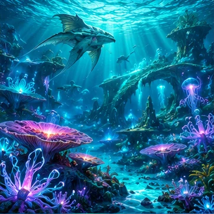
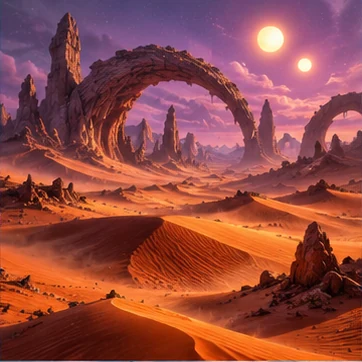
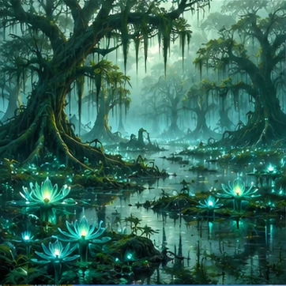
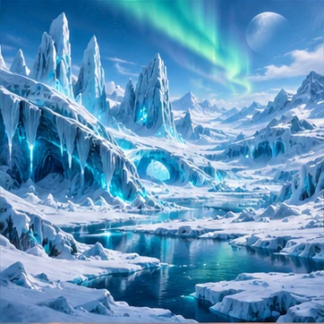
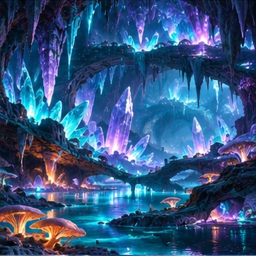
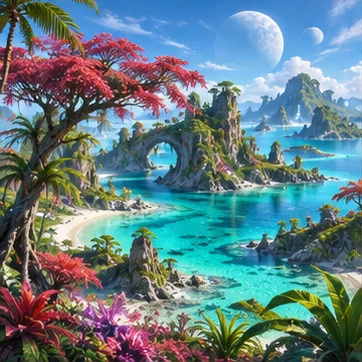
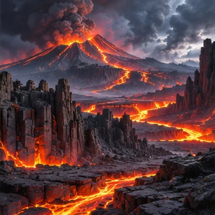
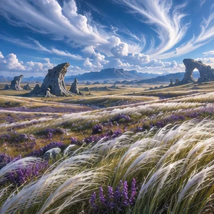

Atlas / biomy
Dvanáct tváří Antirōsu
Každá krajina má své vlastní zákony života. Vyber biom a prozkoumej jeho potvrzený kánon i dosud otevřené otázky.
✦ 12 biomů · 36 kmenů
Potvrzený základ vzhledu
Şivrűa
Džungle · Eshavë, Noruai, Tëlyra
Prozkoumat →
Potvrzený základ vzhledu
Aqçuarïn
Oceán · Meïlë, Oqîrra, Uraqo
Prozkoumat →
Potvrzený základ vzhledu
Shaqaar
Poušť · Aşurë, Khevai, Atąro
Prozkoumat →
Potvrzený základ vzhledu
Luravai
Létající ostrovy · Påmyrė, Alqëri, Awyarai
Prozkoumat →
Potvrzený základ vzhledu
Muruven
Mokřady · Evrashi, Talumo, Nqavë
Prozkoumat →
Částečně potvrzeno
Vhalmir
Led · Qirnau, Sëlyon, Avrûq
Prozkoumat →Čeká na revizi
Møthaña
Hory · Ravësh, Onqari, Tëlqû
Prozkoumat →
Rozpracováno
Velrahn
Jeskyně · Umorë, Qeïsha, Varnu
Prozkoumat →
Rozpracováno
Ishvara
Tropické ostrovy · Lomai, Eshqë, Pavûra
Prozkoumat →
Rozpracováno
Dravari
Planiny · Sëranu, Wertuû, Pawmia
Prozkoumat →
Rozpracováno
Tzhorin
Vulkanismus · Haoru, Ishnëq, Kavûri
Prozkoumat →
Rozpracováno
Veyran
Větrné stepi · Savaï, Përona, Yarqel
Prozkoumat →